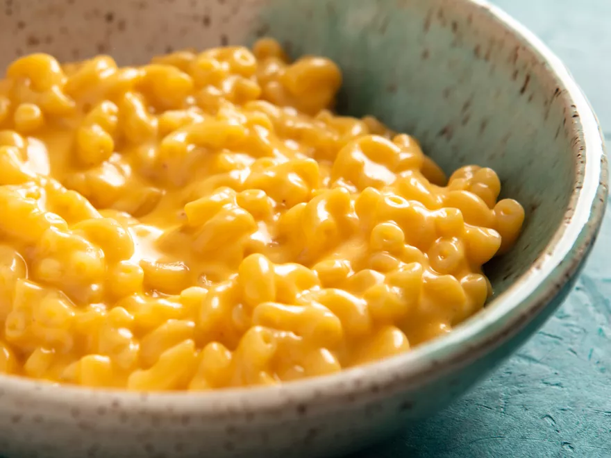

Macaroni and Cheese

Description
This is the creamiest macaroni and cheese recipe you will ever feast
upon. My wife can't say enough good things about this and how deliciously
creamy and yummy it is!
Ingredients
- 6 ounces elbow macaroni
- salt
- 6 ounces evaporated milk
- 6 ounces grated mild or medium cheddar cheese, or any good
melting cheese, such as fontina, gruyere, or jack
Steps
- Place macaroni in a medium saucepan or skillet and add
just enough cold water to cover. Add a pinch of salt and
bring to a boil over high heat, stirring frequently.
Continue to cook, stirring, until water has been almost
completely absorbed and macaroni is just shy of al dente,
about 6 minutes.
- Immediately add evaporated milk and bring to a boil. Add
cheese. Reduce heat to low and cook, stirring continuously,
until cheese is melted and liquid has reduced to a creamy
sauce, about 2 minutes longer. Season to taste with more
salt and serve immediately.